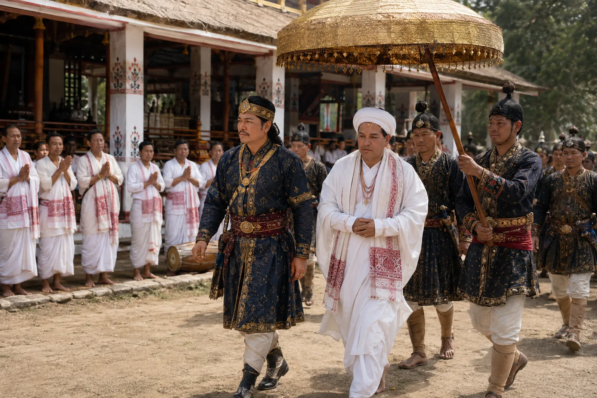

Royal Visitation to the Satra Naamghar
c. 1688 · The Tungkhungia kings

The austere Swargadeo visits a monastic prayer hall (Naamghar) to ensure monastic orders do not undermine state military recruitment.
Sources have not yet been catalogued for this record.
People: Gadadhar Singha (Supaatphaa)